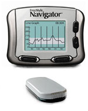

|  | |
| Price | |
| Weight | |
| Screen Size | |
| Monitor Size (L x W) |
3" x 2.5" |
| Transmitter/ Sensor Size (LxWxH) |
2" x 1" (combined) |
| Sensor Life | 5 days |
| Sensor Canula size |
5 mm |
| Angle of Sensor Insertion |
90º |
| Insertion Device | Automatic, comes with sensor |
| Start-Up Initialization Time |
Depends on device (2 or 10 hours) |
| Calibration | Calibrate at 10, 12, 24 and 72 hours after insertion, no calibration for the final 2 days of the 5 day wear |
| User set alarms on low/high |
Yes |
| Predictive alarms for low/high |
10, 20 or 30 minutes |
| Alarms for rate of change |
|
| Displays glucose numbers |
Every 1-2 minutes |
| Displays Directional Trends |
5 TRU™ Directional Glucose Arrows indicating rate and direction of change |
| Displays Rate of Change |
|
| Review glucose data? |
Yes, last 24 hours |
| Capture events | |
| Alarms, vibrates, or both |
Alarm or vibrate |
| Waterprooof Transmitter |
Yes, up to 3 ft for 30 min |
| Transmitter Batteries |
watch battery, replace monthly |
| Monitor Batteries |
2 AAA Alkaline Batteries |
| Range | 10 feet |
| Snooze Alarm |
Yes, 1 hour silence |
| BG Monitor | Built in Freestyle Monitor |
| Computer Software |
Precision Link Diabetes Data Management Software |
| Warranty | |
| Money-back gaurantee |
|